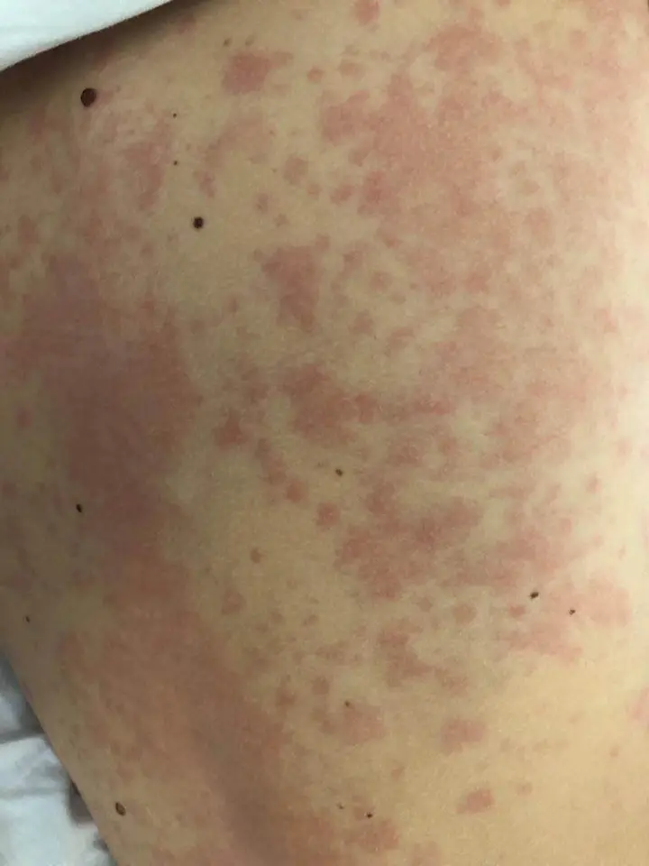

DX.8 — Urticaire, anaphylaxie
1. Définition
L'urticaireÉruption de papules œdémateuses prurigineuses et fugaces, avec ou sans angio-œdème ; le mastocyte cutané libère l'histamine. Une papule régresse en 30 minutes à 24 heures ; l'angio-œdème, jusqu'à 72 heures.3 associe papules, angio-œdème ou les deux. L'anaphylaxieRéaction d'hypersensibilité généralisée, aiguë et potentiellement mortelle, à plusieurs organes. Le diagnostic est clinique : critères NIAID repris par la WAO.1 est une réaction systémique grave, avec flush ou urticaire fréquents.
2. Épidémiologie (Suisse, puis Europe)
En Suisse, l'anaphylaxie sévère touche 7,9 à 9,6 habitants sur 100 000 par an (Berne, 1996 à 1998)5 ; l'Europe en compte 1,5 à 7,9 pour 100 000 personnes-années (revue, 2013)6. La guêpe domine parmi les insectes et les cofacteurs du tableau aggravent la réaction ; l'anaphylaxie est donc une urgence vitale, alors que l'urticaire chronique altère qualité de vie, sommeil et travail.3
| Mesure épidémiologique (population concernée) | Chiffre rapporté pour cette mesure | Population étudiée, source |
|---|---|---|
| Incidence de l'anaphylaxie sévère, Suisse (pour 100 000 habitants par an)563 | 7,9 à 9,6 pour 100 000 habitants par an ; 226 patients, 246 épisodes, 3 décès en 3 ans ; âge moyen de 38 à 41 ans, 47 % de femmes563 | Canton de Berne, environ 940 000 habitants, 1996 à 19985 |
| Incidence de l'anaphylaxie, Europe (pour 100 000 personnes-années)5 | 1,5 à 7,9 pour 100 000 personnes-années ; 0,3 % (IC 95 % 0,1 à 0,5) de la population en fait une au cours de sa vie5 | Revue systématique européenne, 20136 |
| Déclencheurs, Suisse (% des patients) | Piqûres d'hyménoptères 58,8 %, médicaments 18,1 %, aliments 10,1 %, cause inconnue 5,3 %6 | Patients du canton de Berne, 1996 à 19985 |
| Urticaire aiguë (prévalence sur la vie, %) | Prévalence sur la vie d'environ 20 %5 | Population mondiale, guideline de 20263 |
| Urticaire chronique, Europe (prévalence ponctuelle, %) | Prévalence ponctuelle de 0,5 % (IC 95 % 0,2 à 1,0) ; femmes un peu plus touchées que les hommes ; chez l'enfant de moins de 15 ans, sans différence de sexe3 | Méta-analyse, 20197 |
| Mortalité de l'anaphylaxie (par million et par an) | Faible : 0,05 à 0,51 par million et par an pour les médicaments, 0,03 à 0,32 pour les aliments, 0,09 à 0,13 pour les venins7 | Données internationales, WAO 20201 |
| Récidive de l'anaphylaxie (% des patients) | 26,5 à 54 % des patients, sur 1,5 à 25 ans de suivi1 | Revue de la WAO, 20201 |
| Facteurs de risque de réaction grave | Terrain : asthme mal contrôlé, maladie cardiovasculaire, mastocytose, tryptase de base élevée ; cofacteurs ajoutés à l'exposition : effort, infection, alcool, AINS, bêtabloquant, IEC | Guideline de 20263 |
3. Physiopathologie
La cascade physiopathologique se déroule en quatre temps : amorce, développement, installation et maintien. Le mastocyte en est la cellule centrale.
| Temps | Événement moléculaire, cellulaire, tissulaire | Signe clinique |
|---|---|---|
| Amorce | Un allergène provoque la production d'IgE spécifiques ; elles se fixent sur le FcεRI des mastocytes et des basophiles. Les médicaments ou le complément peuvent aussi activer le mastocyte par le récepteur MRGPRX2, sans IgE.1 | Aucun signe (sensibilisation silencieuse) |
| Développement | Une nouvelle exposition relie les IgE entre elles ; le mastocyte dégranule : histamine, tryptase, PAF, leucotriènes.1,3 | Prurit, flush, picotements |
| Installation | L'histamine dilate les veinules et augmente leur perméabilité ; le plasma passe dans le derme (papule) ou dans le sous-cutané (angio-œdème). Au niveau systémique : hypotension, bronchospasme, œdème laryngé, hypermotilité digestive.3 | Papules, œdème, détresse respiratoire, choc |
| Maintien | Les cofacteurs (effort, AINS, alcool, infection) abaissent le seuil de réaction ; dans l'urticaire chronique, plus de 50 % des patients ont une autoallergie (IgE, type I) ou une autoimmunité (IgG, type IIb).1,3 | Poussées répétées ; réaction biphasique : la moitié survient en 6 à 12 h1 |
Le tableau montre, pour chaque lésion, l'exploration qui la révèle et la thérapeutique qui la corrige.
| Lésion ou perturbation | Exploration qui la montre | Thérapeutique qui la corrige (mécanisme) |
|---|---|---|
| Vasodilatation, hypotension, bronchospasme, œdème laryngé | Critères cliniques de la WAOAtteinte cutanéo-muqueuse plus respiratoire, circulatoire ou digestive ; ou hypotension, bronchospasme, atteinte laryngée après exposition connue.1 ; tryptase aiguë | Adrénaline (Epipen®, Jext ®, Adrenalin Bichsel®) : alpha-1 vasoconstricteur, bêta-1 inotrope, bêta-2 bronchodilatateur ; elle freine aussi la libération des médiateurs. |
| Bronchospasme persistant | Auscultation, SpO2 | Salbutamol (Ventolin®) : stimule le récepteur bêta-2 des bronches1. |
| Hypovolémie relative par fuite capillaire | PA, pouls, temps de recoloration | Cristalloïdes en bolus : ils remplacent le volume perdu dans les tissus.1 |
| Effet de l'histamine sur le récepteur H1 (prurit, papules) | Examen de la peau | Antihistaminique H1 : cétirizine (Zyrtec®), bilastine (Bilaxten®), clémastine (Tavegyl®) ; il bloque le récepteur. |
| IgE circulantes dans l'urticaire chronique réfractaire | Anamnèse, IgE totales3 | Omalizumab (Xolair®) : il fixe l'IgE libre et réduit l'activation du mastocyte. |
| Inflammation tardive, risque biphasique | Observation clinique | Prednisone (Prednison Streuli®) : freine la réaction tardive ; l'effet dans l'anaphylaxie aiguë reste incertain.1 |
| Mastocytes en excès (mastocytose) | Tryptase de base, mutation KIT | Avis spécialisé ; adrénaline en urgence. |
4. Démarche diagnostique
La démarche reconnaît d'abord l'anaphylaxie, car elle tue en minutes. L'urticaire sans signe systémique se traite ensuite par étapes.
Étape 1. Devant une urticaire ou une anaphylaxie, le médecin exclut d'abord les drapeaux rouges (🚩 = menace vitale ou perte de chance).
| Drapeau | Signe ou examen qui tranche | Piège | Conduite immédiate |
|---|---|---|---|
| 🚩 Atteinte des voies aériennes supérieuresRouge : œdème de la langue, de la luette ou du larynx ; stridor, voix modifiée, dysphagie. L'obstruction complète survient en minutes.1 | Stridor, voix rauque, langue gonflée | Peu de signes cutanés | Adrénaline intramusculaire immédiate |
| 🚩 Bronchospasme ou hypoxémieRouge : sifflements, dyspnée et SpO2 basse indiquent une atteinte respiratoire, critère de l'anaphylaxie. | Auscultation, SpO2 | Asthme confondu avec anaphylaxie | Adrénaline, oxygène, salbutamol |
| 🚩 Hypotension ou syncopeRouge : pression systolique inférieure à 90 mm Hg chez l'adulte, ou baisse de plus de 30 % par rapport à la base1. | PA, pouls, recoloration | Syncope prise pour un malaise vagal | Adrénaline, position couchée, remplissage |
| 🚩 Atteinte digestive sévèreRouge : crampes violentes ou vomissements répétés après exposition à un non-aliment évoquent une anaphylaxie. | Douleur abdominale, vomissements | Gastro-entérite évoquée à tort | Rechercher la peau et traiter comme anaphylaxie |
| 🚩 Début rapide après exposition connueRouge : une hypotension ou un bronchospasme après un allergène connu suffit, même sans peau atteinte. | Chronologie en minutes à heures | Absence d'urticaire ne rassure pas | Adrénaline |
| 🚩 Facteurs de gravitéRouge : maladie cardiovasculaire, mastocytose, tryptase élevée, asthme mal contrôlé, bêtabloquant, IEC, effort aggravent la réaction. | Médicaments, comorbidités | Sous-estimer le risque | Surveillance prolongée |
| 🚩 Gonflement sans papules ni pruritRouge : un angio-œdème bradykinique (IEC, déficit en C1-INH) ne répond ni à l'antihistaminique ni à l'adrénaline et menace les voies aériennes.3 | Gonflement profond, histoire d'IEC ou familiale | Traiter comme une allergie | Avis urgent, mesures des voies aériennes |
| 🚩 Lésions de plus de 24 heures, douleurs, fièvreRouge : une papule qui dure, brûle ou laisse un purpura évoque une vasculite urticarienne ou un syndrome auto-inflammatoire (CAPS)3. | Papule fixe, douleur, fièvre, arthralgies | Étiqueter urticaire chronique | Biopsie cutanée, bilan inflammatoire |
Étape 2. En l'absence d'urgence, cinq étapes mènent au diagnostic.
• Confirmer la papule. Elle est fugace, prurigineuse, entourée d'érythème ; elle disparaît en 30 minutes à 24 heures3.
• Classer par la durée. L'urticaire est aiguë si elle dure 6 semaines ou moins, et chronique au-delà3.
• Classer par le déclencheur. Spontanée sans facteur défini ; inductible si un facteur précis (froid, pression, effort) la provoque.
• Chercher une cause évitable. Médicament (surtout AINS), infection, aliment chez un patient sensibilisé : tels sont les déclencheurs à rechercher. L'urticaire aiguë peut se passer de tout bilan systématique3.
• Mesurer l'activité. Le médecin note l'UAS7 et l'UCT à chaque visite, puis limite le bilan dans l'urticaire chronique spontanée (9.b)3.
5. Anamnèse ciblée et drapeaux rouges
Chaque question change la décision : elle oriente vers l'anaphylaxie, un déclencheur ou un autre mécanisme.
L'anamnèse caractérise d'abord l'éruption, typique ou non : aspect des lésions, durée, délai après l'exposition et signes systémiques. Elle recherche ensuite les déclencheurs, les cofacteurs, les facteurs physiques et les traitements qui aggravent l'anaphylaxie ; la fenêtre des questions clés précise la décision de chaque réponse.
Drapeaux rouges actionnables. Devant un stridor, une voix modifiée ou une langue gonflée, le médecin doit injecter immédiatement l'adrénaline intramusculaire et appeler les secours. Devant une hypotension ou une syncope, il couche le patient, remplit et demande un avis de soins intensifs. Devant un bronchospasme, il donne l'adrénaline puis le salbutamol. Devant un gonflement sans papules, il suspecte la bradykinine et sécurise les voies aériennes. Devant une lésion de plus de 24 heures, il demande une biopsie et un avis dermatologique1.
6. Examen physique ciblé, région par région
Pour chaque région, l'examen décrit d'abord le normal attendu, puis le pathologique. Il cherche l'atteinte d'organe qui impose l'urgence.
Devant une urticaire ou une anaphylaxie, l'examen suit l'ordre topo-systémique en huit temps : signes vitaux ; peau ; dermographisme ; muqueuses et angio-œdème. Il se poursuit par voies aériennes et poumons ; cœur et circulation ; abdomen ; puis peau pigmentée.
Le cliché commenté « Urticaire aiguë : les papules érythémateuses confluent sur le tronc » montre l'aspect des papules, brut puis annoté.
7. Approche syndromique
Quatre syndromes regroupent la clinique. Chaque syndrome comprend des signes fonctionnels et des signes physiques.
7.1 Le syndrome anaphylactique comprend les signes suivants.1
| Type | Signe | Définition | Recherche (geste) | Mécanisme |
|---|---|---|---|---|
| Fonctionnel | Prurit, chaleur, picotements | Sensation diffuse de brûlure ou de démangeaison, souvent palmaire et plantaire, au début. | Le médecin demande ce qui a débuté en premier et quand. | L'histamine stimule les nerfs sensitifs.3 |
| Fonctionnel | Gêne respiratoire, oppression, voix changée | Difficulté à respirer ou à parler. | Le médecin demande si la gorge se serre. | Œdème laryngé et bronchospasme. |
| Fonctionnel | Malaise, vertige, sensation de mort imminente | Impression de perdre connaissance. | Le médecin demande si le patient a failli tomber. | Chute de pression par vasodilatation. |
| Fonctionnel | Douleurs abdominales, vomissements | Crampes intenses et vomissements répétés. | Le médecin demande le nombre et le moment. | Spasme du muscle lisse digestif. |
| Physique | Triade cutanée, respiratoire, circulatoirePapules ou flush, stridor ou sibilants, hypotension : trois systèmes touchés en minutes. | Au moins deux systèmes atteints.1 | Le médecin examine peau, voies aériennes, PA dans cet ordre. | La libération systémique de médiateurs vasodilate et contracte le bronche. |
| Physique | Hypotension, tachycardiePression systolique inférieure à 90 mm Hg et pouls rapide1. | Choc distributif. | Le médecin mesure la PA couché. | Vasodilatation et fuite capillaire. |
7.2 Le syndrome d'urticaire aiguë ou chronique spontanée comprend les signes suivants.3
| Type | Signe | Définition | Recherche (geste) | Mécanisme |
|---|---|---|---|---|
| Fonctionnel | Prurit intense, nocturne | Démangeaison qui gêne le sommeil. | Le médecin demande l'intensité (0 à 3) chaque jour.3 | L'histamine stimule les fibres C. |
| Fonctionnel | Gonflements associés | Gonflement des paupières ou des lèvres, lent à disparaître. | Le médecin demande la durée du gonflement. | Extravasation dans le derme profond. |
| Physique | Papules migratricesPapules fugaces de taille variable, entourées d'érythème. | Papules de 30 minutes à 24 heures3. | Le médecin marque une papule et la recontrôle plus tard. | Œdème dermique transitoire. |
| Physique | UAS7 et UCTUAS7 : somme sur 7 jours du score quotidien papules plus prurit, maximum 42 ; UCT : 4 questions, bien contrôlée à 12 sur 16 ou plus3. | Scores d'activité et de contrôle. | Le patient note chaque jour et répond au questionnaire. | Quantifient l'activité mastocytaire. |
7.3 Le syndrome d'urticaire chronique inductible comprend les signes suivants.3
| Type | Signe | Définition | Recherche (geste) | Mécanisme |
|---|---|---|---|---|
| Fonctionnel | Papules après froid, pression, soleil, effort, friction | Déclencheur reproductible. | Le médecin demande la situation exacte et le délai. | Le facteur physique active le mastocyte.3 |
| Physique | Provocation physiqueTest de provocation au froid, à la chaleur, à la pression ou à la friction, avec seuil mesuré ; appareils validés. | Papule reproduite au lieu du test. | Le médecin applique le stimulus sur l'avant-bras et lit après quelques minutes. | Confirme le facteur inducteur et mesure le seuil. |
7.4 Le syndrome d'angio-œdème isolé comprend les signes suivants.3
| Type | Signe | Définition | Recherche (geste) | Mécanisme |
|---|---|---|---|---|
| Fonctionnel | Gonflement profond sans prurit | Tuméfaction des lèvres, du visage, des extrémités ou de l'abdomen, avec tension. | Le médecin demande si une démangeaison précède. | Fuite plasmatique dans le derme profond. |
| Physique | Œdème profond non prurigineuxGonflement ferme, peau normale ou pâle, durée jusqu'à 72 heures.3 | Œdème sans papules. | Le médecin palpe la zone et recherche une atteinte de la langue et de la luette. | La bradykinine (déficit en C1-INH, IEC) ou l'histamine en est responsable. |
8. Diagnostic positif et critères
| Entité | Critères | Ce qui ne suffit pas |
|---|---|---|
| Anaphylaxie (WAO 2020, critères NIAID)3 | Critère 1 : début aigu (minutes à heures) avec atteinte de la peau ou des muqueuses (urticaire généralisée, prurit, flush, gonflement des lèvres, de la langue ou de la luette) et au moins un parmi : atteinte respiratoire, hypotension ou signes d'atteinte d'organe, symptômes digestifs sévères1. Critère 2 : hypotension, bronchospasme ou atteinte laryngée après un allergène connu, même sans peau1. Hypotension : baisse de la PA systolique de plus de 30 % ou PA systolique inférieure à 90 mm Hg chez l'adulte ; inférieure à 70 + 2 × l'âge en années chez l'enfant de moins de 10 ans.1 | Des papules isolées ; la tryptase normale n'exclut pas l'anaphylaxie ; un test cutané positif seul ne la prouve pas. |
| Urticaire aiguë | Papules, angio-œdème ou les deux, 6 semaines ou moins3 | Un bilan systématique n'est pas recommandé. |
| Urticaire chronique spontanée | Papules, angio-œdème ou les deux pendant plus de 6 semaines, sans facteur défini3 | Une IgE spécifique positive à un aliment ne prouve pas la cause. |
| Urticaire chronique inductible | Papules reproduites par un stimulus précis, plus de 6 semaines3 | Une friction positive chez un sujet sain. |
Deux scores guident l'usage immédiat : l'UAS7 va de 0 à 42, et l'UCT de 12 sur 16 ou plus signale une maladie bien contrôlée3. L'AECT de 10 ou plus signale un angio-œdème bien contrôlé3. Les critères de l'anaphylaxie visent plus de 95 % de sensibilité1.
9. Examens complémentaires
9.a Gold standard
Aucun test sanguin ne pose le diagnostic d'anaphylaxie ou d'urticaire ; le diagnostic est clinique. Les critères de la WAO visent plus de 95 % de sensibilité, afin de ne manquer presque aucun cas1. La cause d'une allergie se prouve par un test de provocation en centre spécialisé.
9.b Les examens de 1re intention sont les suivants.1
Pour l'anaphylaxie, la tryptase permet de confirmer l'épisode. Pour l'urticaire aiguë, le médecin peut se passer de tout examen. Pour l'urticaire chronique spontanée, un bilan limité suffit.
Après une anaphylaxie, le médecin prescrit la tryptase aiguë, puis la tryptase de base à distance. Il organise aussi la surveillance de la PA, de la SpO2 et de l'ECG. Pour une urticaire chronique spontanée, l'hémogramme avec la CRP suffit.
9.c Alternatives
La recherche de la cause, la grossesse, l'enfant, l'insuffisance rénale, l'allergie aux produits iodés et les dispositifs non compatibles avec l'IRM modifient la démarche ; la fenêtre des alternatives précise chaque solution.
9.d Les examens de 2e intention sont les suivants.1
Le critère de passage est le suivant : épisode sévère sans cause, tryptase de base élevée, gonflement sans papules, ou lésions de plus de 24 heures.1,3
Une urticaire chronique fait doser les IgE totales avec les anticorps anti-TPO ; un angio-œdème sans papules, le C4 avec le C1-INH. Une papule persistante impose une biopsie cutanée, une tryptase de base élevée la recherche de la mutation KIT, et une urticaire inductible un test de provocation.
10. Arbre décisionnel
L'arbre exclut d'abord l'anaphylaxie, puis classe l'urticaire. Chaque nœud renvoie à un signe, un examen ou une action.
• Nœud 1 : les critères de l'anaphylaxie sont-ils remplis ? Si oui, le médecin injecte l'adrénaline intramusculaire (11.B.1)1. Les critères sont remplis lorsque la peau ou les muqueuses sont atteintes avec une dyspnée, une hypotension ou une atteinte digestive sévère1. Ils le sont aussi devant une hypotension, un bronchospasme ou un stridor après un allergène connu1. Sinon, on passe au nœud 21.
• Nœud 2 : le gonflement survient-il sans papules ni prurit ? Si oui, avec IEC ou histoire familiale, il s'agit d'un angio-œdème bradykinique : voies aériennes, C4 et C1-INH3. Sinon, on passe au nœud 33.
• Nœud 3 : la papule dure-t-elle plus de 24 heures, avec douleur ou fièvre ? Si oui, il s'agit d'une vasculite urticarienne ou d'un CAPS : biopsie3. Sinon, on passe au nœud 43.
• Nœud 4 : l'urticaire dure-t-elle 6 semaines ou moins ? Si oui, il s'agit d'une urticaire aiguë : antihistaminique H1, recherche du déclencheur, aucun bilan3. Sinon, on passe au nœud 53.
• Nœud 5 : un facteur physique reproduit-il les papules ? Si oui, il s'agit d'une urticaire inductible : provocation, éviction3. Si non, il s'agit d'une urticaire chronique spontanée : hémogramme, CRP et UAS73.
• Nœud 6 : l'antihistaminique contrôle-t-il la maladie ? Si UCT inférieur à 12 sur 16 → augmenter jusqu'à 4 fois ; si échec → omalizumab ; si échec → spécialiste.3,4
11. Prise en charge selon les recommandations suisses
La prise en charge suit l'AIPS suisse et les recommandations européennes et internationales.
11.A But thérapeutique
En urgence, le but est de rétablir la ventilation et la circulation en quelques minutes. Dans l'urticaire chronique, le but est la disparition des papules et du prurit, avec un UCT d'au moins 12 sur 163. À long terme, le but est de prévenir la récidive de l'anaphylaxie.
11.B Moyens
L'anaphylaxie se traite dans l'ordre suivant.
Urgence — conduite chronologique de l'anaphylaxie
• 1. Retirer l'allergène si possible, appeler les secours et ne pas laisser le patient seul.1
• 2. Injecter l'adrénaline par voie intramusculaire dans la face antérolatérale de la cuisse, geste que l'Académie européenne d'allergologie et d'immunologie clinique (EAACI) recommande en première ligne2. L'AIPS d'Epipen® autorise 0,3 mg chez l'adulte53836, et celui de Jext® autorise 300 microgrammes61315. La WAO fixe la dose à 0,01 mg/kg, maximum 0,5 mg ; l'AIPS d'Epipen® fixe aussi 0,01 mg/kg chez l'enfant, par stylo à 0,15 ou 0,3 mg153836. Répéter après 5 à 15 minutes si l'effet est insuffisant153836.
• 3. Positionner le patient couché, assis si détresse respiratoire, sur le côté gauche si enceinte, en position latérale de sécurité si inconscient1. Le patient hypotendu ne se redresse pas brusquement, car le retour veineux chute et un arrêt cardiaque peut survenir1.
• 4. Donner de l'oxygène à haut débit et poser une voie intraveineuse de gros calibre, car le choc exige un accès rapide1. Perfuser rapidement un bolus de cristalloïdes isotoniques si l'état circulatoire est instable1. La recommandation de la WAO est de 1 à 2 L chez l'adulte (5 à 10 mL/kg pendant les 5 à 10 premières minutes)12. Chez l'enfant, elle est de 10 mL/kg, hors AIPS12.
• 5. Traiter le bronchospasme par salbutamol inhalé (Ventolin®), car il stimule le récepteur bêta-2 des bronches37397. La recommandation de la WAO ajoute l'adrénaline nébulisée en cas d'obstruction laryngée, hors AIPS1.
• 6. En cas de choc réfractaire, on passe à l'adrénaline intraveineuse (Adrenalin Bichsel®) en soins monitorés56472. L'AIPS d'Adrenalin «Bichsel» indique 0,05 à 0,1 mg i.v., répétable toutes les 3 à 5 minutes56472. La WAO cite le glucagon (GlucaGen®) sous bêtabloquant ; les preuves restent très limitées1.
• 7. Les traitements de seconde ligne sont l'antihistaminique H1 pour la peau (Tavegyl®, 2 mg i.v. lent35501) et le corticoïde (Prednison Streuli®29349). Leur bénéfice dans la phase aiguë reste incertain1.
• 8. Le prélèvement de la tryptase doit se faire entre 15 minutes et 3 heures1.
• 9. Observer : la moitié des réactions biphasiques survient dans les 6 à 12 heures, ce qui justifie une observation prolongée1.
• 10. À la sortie : deux autoinjecteurs, plan d'action écrit, enseignement du geste, consultation d'allergologie.1,2
Hors urgence : urticaire, ordre du traitement.
• 1. Mesures générales. Le patient évite les déclencheurs connus, les AINS et la chaleur excessive, et tient un carnet UAS. Le suivi par UAS7 permet de repérer les facteurs d'aggravation3.
• 2. Antihistaminique H1 de 2e génération en première ligne. Le patient doit le prendre chaque jour et non à la demande3. La dose est de 10 mg par jour pour la cétirizine (Zyrtec®)348143 et de 20 mg par jour pour la bilastine (Bilaxten®)361446.
• 3. Dose augmentée jusqu'à 4 fois en cas d'échec (hors dose de l'AIPS) ; plus de 4 fois est déconseillé.3,4
• 4. Omalizumab : la posologie (Xolair®) est de 300 mg par voie sous-cutanée toutes les 4 semaines68030. Il s'associe à l'antihistaminique si la maladie reste active3.
• 5. Spécialiste : l'immunosuppresseur ou l'inhibiteur de la tyrosine kinase de Bruton relève du spécialiste3. Le corticoïde oral peut s'employer en cure courte de 10 jours au plus pour une poussée aiguë3. La guideline internationale d'urticaire donne 20 à 50 mg de prednisone par jour3, dose qui reste dans la fourchette de 5 à 60 mg de l'AIPS de Prednison Streuli29349.
• 6. Non pharmacologique. Éviction du facteur physique, éducation du patient, soutien psychologique pour le prurit et le sommeil.
| Médicament (AIPS) | Dose adulte | Pièges | Contre-indications ou précautions |
|---|---|---|---|
| Epipen®53836 | 0,3 mg i.m. ; enfant 15 à 30 kg, 0,15 mg ; deux injecteurs prescrits53836 | Hésiter à injecter | Cardiopathie, hyperthyroïdie : effets sévères, mais pas de contre-indication absolue en anaphylaxie |
| Adrenalin Bichsel® | s.c. 0,1 à 0,5 mg ; i.v. 0,05 à 0,1 mg dans l'anaphylaxie sévère56472 | Voie i.v. sans monitorage | Arythmie, hypertension |
| Zyrtec® | 10 mg par jour48143 | Somnolence ; insuffisance rénale : réduire | Insuffisance rénale terminale (clairance inférieure à 15 mL/min) : contre-indiqué3 |
| Bilaxten® | 20 mg par jour, à jeun61446 | Jus de fruit réduit l'absorption | Insuffisance rénale ou hépatique grave : déconseillé |
| Xolair® | 300 mg s.c. toutes les 4 semaines68030 | Anaphylaxie possible, surtout dans les 2 heures suivant l'une des 3 premières injections3 | Hypersensibilité à l'omalizumab |
| Prednison Streuli® | 5 à 60 mg par jour selon l'AIPS29349 ; 20 à 50 mg dans l'urticaire (hors AIPS, recommandation de la guideline internationale d'urticaire)3 | Cure prolongée | Grossesse : si nécessaire seulement |
Situations spéciales. Grossesse : l'AIPS d'Epipen® limite l'adrénaline aux cas de nécessité absolue53836 ; l'anaphylaxie reste une telle nécessité vitale, et la patiente se place sur le côté gauche1. Les antihistaminiques de 2e génération s'emploient avec prudence4814361446 ; la prednisone est le corticoïde préféré29349. Allaitement : l'adrénaline passe dans le lait ; l'AIPS d'Epipen® la réserve aux cas de nécessité absolue, ce qu'est l'anaphylaxie53836. Enfant : l'AIPS d'Adrenalin «Bichsel» indique 0,01 mg/kg par voie sous-cutanée56472. La WAO recommande la même dose par voie intramusculaire1, et l'AIPS d'Epipen® donne aussi 0,01 mg/kg chez l'enfant53836. La dose d'Epipen® Junior est de 0,15 mg pour 15 à 30 kg53836. Pour Tavegyl®, la dose est de 0,025 mg/kg par jour dès 1 an35501. Insuffisant rénal : la cétirizine se réduit selon la clairance (voir la fenêtre)48143. Insuffisant hépatique : la bilastine est déconseillée si l'atteinte est grave61446. Sujet âgé : l'adrénaline impose la prudence cardiovasculaire.
Social et professionnel. Le médecin peut délivrer un certificat d'incapacité de travail selon la gravité. La LAMal prend en charge les soins ; la LAA s'applique si la réaction survient lors d'un accident ou d'une piqûre professionnelle. Le patient porte deux autoinjecteurs en permanence. Les proches, l'école et l'employeur reçoivent le plan d'action. La LAI intervient en cas d'urticaire chronique invalidante.
11.C Surveillance
| Quoi | Quand | Seuil d'alerte |
|---|---|---|
| PA, pouls, SpO2, conscience | En continu en urgence | PA systolique inférieure à 90 mm Hg ; SpO2 basse1 |
| Réaction biphasique | 6 à 12 heures après l'épisode1 | Nouveaux signes : adrénaline |
| UAS7 et UCT | À chaque visite3 | UCT inférieur à 12 sur 16 : renforcer le traitement3 |
| Omalizumab | Après la première injection ; auto-injection possible dès la 4e en l'absence d'anaphylaxie antérieure (AIPS)3 | Urticaire, dyspnée, œdème dans les 2 heures3 |
| Prednisone au-delà de 8 à 10 jours3 | Selon la durée | Arrêt par paliers (AIPS) |
11.D Le pronostic et les critères de guérison sont les suivants3.
L'urticaire aiguë guérit spontanément dans les 6 semaines31. L'urticaire chronique spontanée peut récidiver après des mois ou des années de rémission complète3. La rémission se définit par un UCT bien contrôlé sous traitement réduit ou arrêté. L'anaphylaxie peut récidiver chez 26,5 à 54 % des patients1. Le patient sort lorsque quatre critères sont réunis :
• Les signes ont disparu.
• L'observation prolongée est terminée.
• L'autoinjecteur est prescrit.
• Le plan d'action écrit est remis.
Recherche : la guideline de 2026 cite un inhibiteur oral de la tyrosine kinase de Bruton, approuvé par la FDA en septembre 2025 pour l'urticaire chronique spontanée résistante aux antihistaminiques31. Un anticorps anti-interleukines 4 et 13 est suggéré hors indication31.
12. Prévention
La prévention vise la récidive de l'anaphylaxie et des poussées d'urticaire. Les mesures suivent l'AIPS, la WAO et la guideline d'urticaire. Le risque du point 2 fixe les cibles : piqûres d'hyménoptères, médicaments, aliments.
| Niveau | Gestes concrets | Population, seuil |
|---|---|---|
| Primaire | Éviter l'allergène et les cofacteurs (AINS, alcool, effort) ; lecture des étiquettes ; prudence lors des piqûres d'insectes ; adapter la prescription des médicaments à risque. | Patients sensibilisés ; antécédent d'allergie1 |
| Secondaire | Prescrire deux autoinjecteurs (Epipen® ou Jext®) ; former le patient et les proches ; plan d'action écrit ; carte ou bracelet d'alerte ; envoi à l'allergologue pour identifier la cause ; immunothérapie allergénique si un venin est en cause.1,2 | Tout patient ayant fait une anaphylaxie ; enfants et parents formés |
| Tertiaire | Suivi de l'urticaire par UAS7 et UCT, réduction du traitement quand la maladie est contrôlée, éducation, soutien du sommeil et du travail ; inscription du déclencheur au dossier.1,3 | Urticaire chronique ; patients après anaphylaxie |
13. Points clés
- L'anaphylaxie est un diagnostic clinique : peau ou muqueuses plus un autre organe, ou hypotension après un allergène connu1.
- L'adrénaline intramusculaire à la cuisse est le premier geste2 : 0,3 mg chez l'adulte avec Epipen®, à répéter après 5 à 15 minutes53836.
- Une tryptase normale ne peut pas exclure l'anaphylaxie, et la tryptase de base sert à chercher une mastocytose1.
- L'urticaire est aiguë jusqu'à 6 semaines, chronique au-delà, et une papule dure moins de 24 heures3.
- En urticaire chronique, l'antihistaminique de 2e génération est la première ligne, jusqu'à 4 fois la dose, puis l'omalizumab 300 mg toutes les 4 semaines3468030.
- Tout patient sorti d'une anaphylaxie reçoit deux autoinjecteurs, un plan écrit et un avis d'allergologie1,2.
14. Pièges et questions fréquentes à l'examen fédéral suisse
Un patient sans papules mais hypotendu après une piqûre de guêpe : est-ce une anaphylaxie ? Réponse : Oui. L'hypotension après un allergène connu suffit, même sans peau atteinte.1
Quel est le premier médicament de l'anaphylaxie ? Réponse : L'adrénaline intramusculaire à la cuisse ; l'antihistaminique et le corticoïde ne sont que de seconde ligne.
Quelle dose d'adrénaline donne-t-on à l'adulte avec l'autoinjecteur ? Réponse : 0,3 mg intramusculaire (Epipen® AIPS), répétable après 5 à 15 minutes53836.
La tryptase est normale : l'anaphylaxie est-elle exclue ? Réponse : Non. 36 à 40 % des patients restent sous 11,4 µg/L1. Il faut aussi doser la tryptase de base après 24 heures1.
Combien de temps dure une papule d'urticaire ? Réponse : De 30 minutes à 24 heures ; au-delà, on évoque une vasculite urticarienne.3
Quand l'urticaire est-elle chronique ? Réponse : Au-delà de 6 semaines3.
Un angio-œdème sous IEC répond-il à l'antihistaminique ? Réponse : Non. Il est médié par la bradykinine, et l'adrénaline agit peu. En cas de doute avec une anaphylaxie ou d'obstruction des voies aériennes, on injecte l'adrénaline sans attendre et on sécurise les voies aériennes1.
Quelle est la dose d'omalizumab dans l'urticaire chronique spontanée ? Réponse : 300 mg par voie sous-cutanée toutes les 4 semaines, après échec des antihistaminiques (AIPS).15
Peut-on dépasser 4 fois la dose d'antihistaminique ? Réponse : Non, la guideline le déconseille3.
Sources bibliographiques
- [S1] Cardona V, Ansotegui IJ, Ebisawa M, et al. World allergy organization anaphylaxis guidance 2020. World Allergy Organ J 2020;13:100472. PMID 33204386. DOI 10.1016/j.waojou.2020.100472. https://doi.org/10.1016/j.waojou.2020.100472 — texte intégral lu le 27.10.2026.
- [S2] Muraro A, Worm M, Alviani C, et al. EAACI guidelines: Anaphylaxis (2021 update). Allergy 2022;77:357-377. PMID 34343358. DOI 10.1111/all.15032. https://doi.org/10.1111/all.15032 — résumé lu le 27.10.2026.
- [S3] Zuberbier T, Ansari ZA, Abdul Latiff AH, et al. The International Guideline for the Definition, Classification, Diagnosis and Management of Urticaria. Allergy 2026;81:2582-2632. PMID 41649409. DOI 10.1111/all.70210. https://doi.org/10.1111/all.70210 — texte intégral lu le 27.10.2026.
- [S4] Schwab J, Stehlin F, Muller YD. Physiopathologie et prise en charge de l'urticaire chronique. Rev Med Suisse 2025;21:642-647. PMID 40176611. DOI 10.53738/REVMED.2025.21.912.642. https://doi.org/10.53738/REVMED.2025.21.912.642 — résumé lu le 27.10.2026.
- [S5] Helbling A, Hurni T, Mueller UR, Pichler WJ. Incidence of anaphylaxis with circulatory symptoms: a study over a 3-year period comprising 940 000 inhabitants of the Swiss Canton Bern. Clin Exp Allergy 2004;34:285-290. PMID 14987309. DOI 10.1111/j.1365-2222.2004.01882.x. https://doi.org/10.1111/j.1365-2222.2004.01882.x — résumé lu le 27.10.2026.
- [S6] Panesar SS, Javad S, de Silva D, et al. The epidemiology of anaphylaxis in Europe: a systematic review. Allergy 2013;68:1353-1361. PMID 24117770. DOI 10.1111/all.12272. https://doi.org/10.1111/all.12272 — résumé lu le 27.10.2026.
- [S7] Fricke J, Ávila G, Keller T, et al. Prevalence of chronic urticaria in children and adults across the globe: systematic review with meta-analysis. Allergy 2020;75:423-432. PMID 31494963. DOI 10.1111/all.14037. https://doi.org/10.1111/all.14037 — résumé lu le 27.10.2026.
- [S8] AIPS (Swissmedicinfo). Epipen®/Epipen® Junior, n° Swissmedic 53836. Information professionnelle. https://www.swissmedicinfo.ch — consulté le 27.10.2026.
- [S9] AIPS (Swissmedicinfo). Jext®, n° Swissmedic 61315. Information professionnelle. https://www.swissmedicinfo.ch — consulté le 27.10.2026.
- [S10] AIPS (Swissmedicinfo). Adrenalin «Bichsel» 0,1 mg/mL et 0,5 mg/mL, n° Swissmedic 56472. Information professionnelle. https://www.swissmedicinfo.ch — consulté le 27.10.2026.
- [S11] AIPS (Swissmedicinfo). Tavegyl® solution injectable, n° Swissmedic 35501. Information professionnelle. https://www.swissmedicinfo.ch — consulté le 27.10.2026.
- [S12] AIPS (Swissmedicinfo). Zyrtec®, n° Swissmedic 48143. Information professionnelle. https://www.swissmedicinfo.ch — consulté le 27.10.2026.
- [S13] AIPS (Swissmedicinfo). Bilaxten®, n° Swissmedic 61446. Information professionnelle. https://www.swissmedicinfo.ch — consulté le 27.10.2026.
- [S14] AIPS (Swissmedicinfo). Prednison Streuli, n° Swissmedic 29349. Information professionnelle. https://www.swissmedicinfo.ch — consulté le 27.10.2026.
- [S15] AIPS (Swissmedicinfo). Xolair® en seringue préremplie, n° Swissmedic 68030001. Information professionnelle. https://www.swissmedicinfo.ch — consulté le 27.10.2026.
- [S16] AIPS (Swissmedicinfo). Ventolin®, n° Swissmedic 37397. Information professionnelle. https://www.swissmedicinfo.ch — consulté le 27.10.2026.
- [S17] AIPS (Swissmedicinfo). GlucaGen®, n° Swissmedic 31489. Information professionnelle. https://www.swissmedicinfo.ch — consulté le 27.10.2026.
Questions clés de l'anamnèse
Devant des papules ou un malaise après une exposition, chaque question oriente vers l'anaphylaxie, un déclencheur ou un autre mécanisme.
| Question clé | Raison physiopathologique | Décision qui en découle |
|---|---|---|
| Les symptômes sont-ils apparus en minutes après une exposition ?Le pontage des IgE libère l'histamine en quelques minutes ; une chronologie rapide désigne l'allergie immédiate.1 | La dégranulation suit l'allergène de près. | Chronologie rapide plus signes systémiques : anaphylaxie, adrénaline. |
| Quels aliments, médicaments, piqûres ou latex ont précédé ? | Les aliments, les venins d'insectes et les médicaments sont les grands déclencheurs. | Éviction, consultation d'allergologie. |
| Le patient a-t-il pris un AINS, de l'alcool, fait un effort ou eu une infection ?Ces cofacteurs abaissent le seuil de la réaction ; un effort ou un AINS peut être nécessaire pour déclencher. | Les cofacteurs amplifient l'activation des mastocytes. | Les noter ; éviter l'AINS. |
| Une papule dure-t-elle plus de 24 heures, brûle-t-elle ou laisse-t-elle une tache 1? | Une lésion persistante évoque une vasculite urticarienne et non une urticaire.3 | Biopsie cutanée. |
| Y a-t-il un gonflement sans papules ni prurit ?Une atteinte bradykinique ne répond pas à l'histamine. | La bradykinine dilate les vaisseaux sans mastocyte. | Chercher IEC, déficit en C1-INH. |
| Un froid, une pression, une chaleur ou un effort déclenche-t-il les papules ? | L'urticaire inductible naît d'un facteur physique précis. | Tests de provocation en centre spécialisé. |
| Le patient prend-il un bêtabloquant ou un IEC, a-t-il un asthme ou une cardiopathie ? | Ces facteurs aggravent l'anaphylaxie et rendent l'adrénaline moins efficace.1 | Prescrire deux autoinjecteurs, avis spécialisé. |
| Existe-t-il bouffées vasomotrices, diarrhée ou rougeur sans papules ? | Un flush isolé évoque ménopause, carcinoïde ou carcinome médullaire de la thyroïde plutôt qu'une allergie. | Réorienter le bilan. |
Urticaire : typique ou non
| Caractère | Urticaire ou anaphylaxie typique |
|---|---|
| Lésion | Papules œdémateuses prurigineuses et fugaces, avec ou sans angio-œdème3. |
| Durée | Une papule régresse en 30 minutes à 24 heures ; l'angio-œdème peut durer jusqu'à 72 heures3. |
| Délai | Les symptômes apparaissent en quelques minutes après l'exposition, car le pontage des IgE libère aussitôt l'histamine1. |
| Déclencheurs et cofacteurs | Aliments, venins d'insectes, médicaments et latex ; un AINS, l'alcool, l'effort ou une infection abaissent le seuil de la réaction. |
| Signes associés | Flush fréquent ; une atteinte respiratoire, circulatoire ou digestive fait de l'épisode une anaphylaxie. |
La lésion n'est pas typique si une papule dure plus de 24 heures, brûle ou laisse une tache : une vasculite urticarienne est alors suspectée3. Un gonflement sans papules ni prurit évoque la bradykinine ; un flush sans papules avec diarrhée oriente vers une autre cause.
Signes vitaux
| Étape | Ce que le médecin recherche et constate |
|---|---|
| Repère | PA, pouls, fréquence respiratoire, SpO2 : quatre mesures qui décident de la gravité. |
| Normal attendu | PA systolique de 90 mm Hg ou plus, pouls régulier, SpO2 normale1. |
| Pathologique | Hypotension, tachycardie, SpO2 basse. |
| Technique | Le médecin prend la PA couché, compte le pouls et pose un oxymètre. |
| Valeur et piège | Une PA systolique inférieure à 90 mm Hg chez l'adulte définit l'hypotension de l'anaphylaxie.1 Piège : une PA normale précoce. |
Peau
| Étape | Ce que le médecin recherche et constate |
|---|---|
| Repère | Inspecter tout le corps ; une papule est surélevée, rosée, prurigineuse, fugace. |
| Normal attendu | Peau lisse, sans papules. |
| Pathologique | Papules de taille variable, érythème, flush, prurit. |
| Technique | Le médecin inspecte la peau, entoure une papule au feutre et revoit après quelques heures. |
| Valeur et piège | Une papule qui bouge et disparaît en moins de 24 heures est urticarienne.3 Piège : le flush sans papule. |
Dermographisme
| Étape | Ce que le médecin recherche et constate |
|---|---|
| Repère | Papule linéaire apparaissant après friction ; signe d'urticaire inductible. |
| Normal attendu | Aucune réaction après friction. |
| Pathologique | Papule linéaire en quelques minutes. |
| Technique | Le médecin trace une ligne ferme sur la peau avec un abaisse-langue ; un dermographomètre standardise la force. |
| Valeur et piège | Positif dans l'urticaire inductible symptomatique ; fréquent aussi chez le sujet sain en faible intensité. Piège : friction trop forte. |
Muqueuses et angio-œdème
| Étape | Ce que le médecin recherche et constate |
|---|---|
| Repère | Lèvres, langue, luette : gonflement profond, non prurigineux, plus lent que la papule. |
| Normal attendu | Lèvres, langue et luette normales. |
| Pathologique | Gonflement des lèvres, de la langue, de la luette. |
| Technique | Le médecin fait ouvrir la bouche, abaisse la langue et regarde la luette. |
| Valeur et piège | L'œdème de la langue ou de la luette annonce l'obstruction des voies aériennes. Piège : l'œdème laryngé reste invisible. |
Voies aériennes et poumons
| Étape | Ce que le médecin recherche et constate |
|---|---|
| Repère | Stridor, voix et sibilants : trois signes qui séparent l'œdème laryngé du bronchospasme. |
| Normal attendu | Voix claire, murmure vésiculaire normal. |
| Pathologique | Stridor, voix rauque, sibilants, tirage. |
| Technique | Le médecin écoute la voix, le cou, puis ausculte les deux poumons. |
| Valeur et piège | Le stridor impose l'adrénaline immédiate. Piège : l'asthme confond le tableau. |
Cœur et circulation
| Étape | Ce que le médecin recherche et constate |
|---|---|
| Repère | Pouls, recoloration et marbrures : traduisent la perfusion. |
| Normal attendu | Recoloration cutanée en 2 secondes ou moins, extrémités chaudes3. |
| Pathologique | Tachycardie, recoloration lente, marbrures. |
| Technique | Le médecin appuie 5 secondes sur la pulpe d'un doigt et chronomètre le retour de la couleur3. |
| Valeur et piège | Une recoloration lente signale le choc. Piège : froid ambiant. |
Abdomen
| Étape | Ce que le médecin recherche et constate |
|---|---|
| Repère | Douleur et vomissements : signe d'atteinte digestive. |
| Normal attendu | Abdomen souple, indolore. |
| Pathologique | Douleur crampiforme, défense, diarrhée. |
| Technique | Le médecin palpe doucement en quatre quadrants. |
| Valeur et piège | Une douleur sévère avec peau atteinte évoque une anaphylaxie. Piège : abdomen aigu chirurgical. |
Peau pigmentée et signe de Darier
| Étape | Ce que le médecin recherche et constate |
|---|---|
| Repère | Frotter une macule brun-rouge la fait gonfler : signe d'accumulation de mastocytes. |
| Normal attendu | Aucune macule pigmentée. |
| Pathologique | Macules brun-rouge qui gonflent au frottement. |
| Technique | Le médecin frotte la lésion cinq secondes et attend quelques minutes. |
| Valeur et piège | Évoque une mastocytose cutanée, dont une anaphylaxie sévère est une complication. Piège : l'absence n'exclut pas la maladie.1 |
Urticaire aiguë : les papules érythémateuses confluent sur le tronc
Urticaire aiguë : les papules érythémateuses confluent sur le tronc. Cette photographie clinique montre la face latérale du tronc et de la cuisse en vue directe.

Lisez d'abord seul ce cliché (urticaire aiguë : les papules érythémateuses confluent sur le tronc) : cherchez vous-même le signe.
La copie annotée (urticaire aiguë : les papules érythémateuses confluent sur le tronc) numérote les repères décrits ci-dessous.
- Repère n° 1 : La papule érythémateuse isolée est aux bords nets.
- Repère n° 2 : Les papules sont confluentes en plaque à contour polycyclique.
- Repère n° 3 : L'érythème est étendu là où les papules fusionnent.
- Une papule fixe plus de 24 heures doit faire évoquer une vasculite urticarienne, non une urticaire3.
- L'absence de papules ne doit pas rassurer devant une hypotension après un allergène connu.
Ce que l'image décide. Devant des papules fugaces et prurigineuses sans signe systémique, le médecin prescrit un antihistaminique H1 de 2e génération3. Devant une atteinte respiratoire ou circulatoire associée, il injecte l'adrénaline intramusculaire.

Tryptase sérique aiguë
| Fiche | Prescription, valeurs et pièges |
|---|---|
| Tryptase sérique aiguë | Enzyme du mastocyte ; elle monte dès 15 minutes, culmine 1 à 2 heures après le début et reste élevée jusqu'à 3 heures ou plus.1 |
| Indication | Normal (SI) | Résultat anormal et signification | Conduite |
|---|---|---|---|
| Suspicion d'anaphylaxie ; prélever entre 15 minutes et 3 heures1 | Inférieure à 11,4 µg/L (valeur de référence habituelle)1 | Élevée : soutient l'anaphylaxie ; normale : n'exclut rien (36 à 40 % des patients restent sous 11,4 µg/L)1 | Compléter par la tryptase de base |
Surveillance de la PA, de la SpO2, de l'ECG
| Indication | Normal (SI) | Résultat anormal et signification | Conduite |
|---|---|---|---|
| Anaphylaxie | PA et SpO2 normales | Instabilité | Soins monitorés |
Alternatives selon le terrain
| Situation | Alternative | Raison |
|---|---|---|
| Cause à identifier | Tests cutanés, IgE spécifiques, test d'activation des basophiles, provocation, en centre spécialisé, à distance de l'épisode | Les tests apportent la preuve de sensibilisation ; ils ne remplacent pas l'histoire1,3 |
| Grossesse | Aucune imagerie requise ; tests cutanés différés | Éviter une réaction provoquée |
| Enfant | Mêmes tests ; doses au poids | Adapter à l'âge |
| Clairance de la créatinine inférieure à 30 mL/min1 | Aucun examen contre-indiqué ; adapter la dose de cétirizine | Élimination rénale |
| Allergie aux produits iodés | Consultation d'allergologie avant un produit de contraste | Prévenir une réaction par produit de contraste |
| Dispositif non compatible avec l'IRM | Aucune IRM nécessaire | Le diagnostic est clinique |
C4 et C1-INH (antigène, fonction)
| Indication | Résultat et signification | Conduite |
|---|---|---|
| Angio-œdème sans papules | Bas : angio-œdème héréditaire | Traitement spécifique, avis urgent |
Mutation KIT, moelle osseuse
| Indication | Résultat et signification | Conduite |
|---|---|---|
| Tryptase de base élevée | Mastocytose clonale | Avis hématologique |
Test de provocation physique ou d'exposition
| Indication | Résultat et signification | Conduite |
|---|---|---|
| Urticaire inductible ou allergie suspectée | Confirme le facteur et le seuil | Éviction, plan d'action |